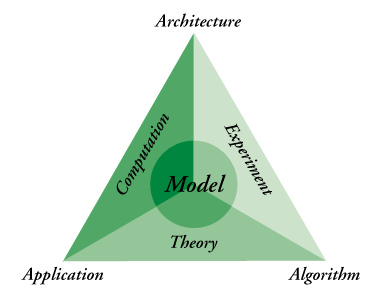

Knowledge Acquisition
Modern science and mathematics
are more concerned with
pattern
recognition
and characterization
than with mere
symbol manipulation
.

We communicate models by:
Gesticulating (hand waving!)
Telling Stories
Drawing Pictures
Previous
Next
 Knowledge Acquisition
Knowledge Acquisition